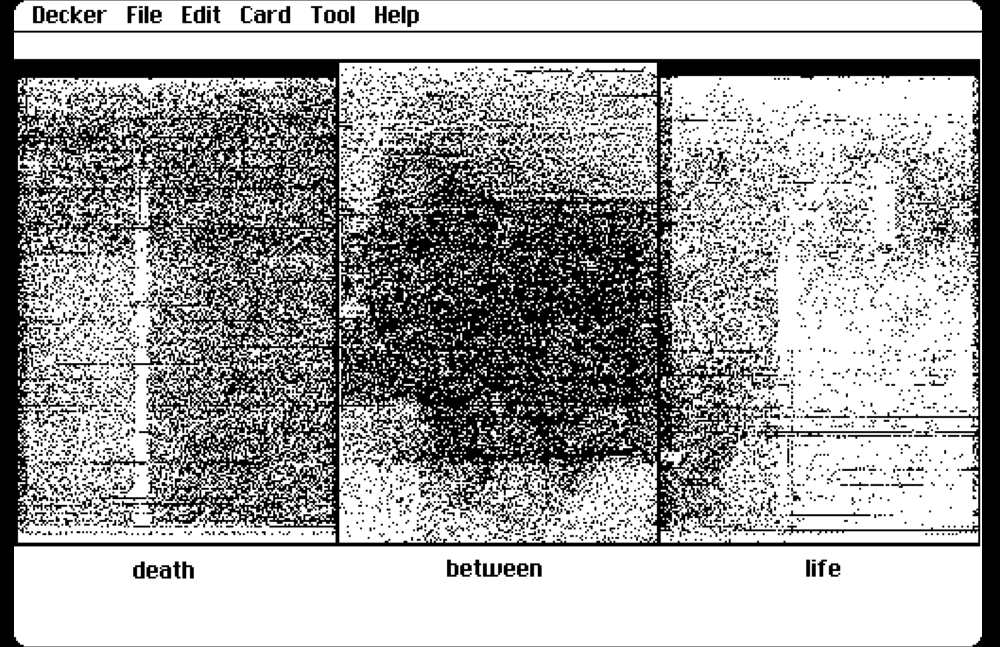
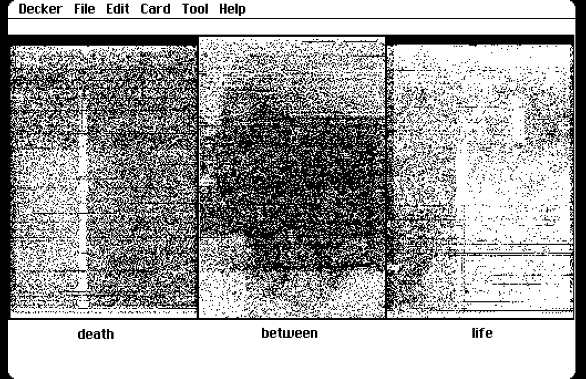

Utilizing the glitched and original images from the last project, this work plays with sound, interactivity and retro-style rendering in the Decker Multimedia Sketchbook. Through the use of Decker’s web editor and the program's custom scripting language, Lil, I aimed to explore different ways to overlay and interact with the computer beyond the local hardware and into the web space. With Decker’s card-based navigation system, I spent a lot of time experimenting with different widgets or interactive elements, learning Lil and changing layouts. For me, this work was as much about the process as it was the final product and I hope to iterate upon it in the future for further refining. In order to host this project online, I embedded the exported html file into a Neocities site created to display projects 1-3. While the design of my Neocities site is still bare-bones, I found the start to this site as a way to expand my technical knowledge of HTML and CSS in an approachable manner.
Onyx and Ivory (2021) by Michaela Barker; Self Portrait (2022) by Michaela Barker